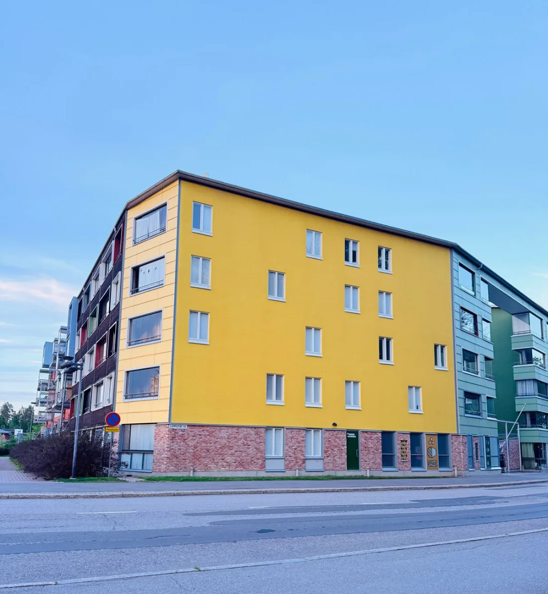

Tiivistämme rappukäytävät, yhteistilat ja ikkunat kiinteällä sopimushinnalla. Yksi kumppani ja selkeä tarjous hallitukselle.
Kiinteä sopimushinta · kartoitus veloituksetta · työ mahdollisimman vähällä häiriöllä

Säästöarvio perustuu tavanomaiseen kohteeseen, jossa vetävien ovien ja ikkunoiden tiivisteet uusitaan. Se on arvio, ei lupaus: toteutuma riippuu rakennuksesta, lämmitystavasta ja siitä kuinka moni kohta vuotaa. Emme lupaa tiettyä säästöä etukäteen.
Kolme askelta: postinumero, aika ja taloyhtiön tiedot. Käynti kestää noin 20 minuuttia eikä sido teitä mihinkään.
Hoidamme koko urakan alusta loppuun — te saatte selkeän hinnan, sovitun aikataulun ja dokumentoidun lopputuloksen.
Kartoitus, työ ja raportointi samalta toimijalta. Ei useaa aliurakoitsijaa eikä hajanaisia laskuja hallituksen selviteltäväksi.
Näette kokonaishinnan kirjallisena ennen töiden aloitusta. Ei tuntiveloitusta eikä yllätyseriä — helppo viedä hallituksen päätökseen.
Sovimme ajankohdan isännöitsijän kanssa ja teemme työn porras kerrallaan siististi. Kulkureitit pidetään auki koko työn ajan, ja pyrimme pitämään häiriön asukkaille mahdollisimman pienenä.
Toimitamme dokumentin tehdystä työstä hallitukselle. Asennustyölle ja tiivisteille on kahden vuoden takuu. Jälki on todennettavissa.
Tarkennamme listan kartoituskäynnillä.
Käymme paikan päällä ja tarkistamme kaikki ovet veloituksetta.
Toimitamme kirjallisen, kiinteän sopimushinnan hallituksen päätettäväksi.
Sovimme isännöitsijän kanssa asukkaille sopivan ajankohdan.
Vaihdamme tiivisteet siististi porras kerrallaan, arkea häiritsemättä.
Luovutamme dokumentin tehdystä työstä. Asennustyölle kahden vuoden takuu.
Jos aikataulu ei ole vielä selvillä, jättäkää tiedot tästä — otamme yhteyttä ja sovimme kartoituskäynnin kanssanne. Voitte myös varata ajan suoraan kalenterista.
Kotitalousvähennys on henkilökohtainen, joten taloyhtiö ei sitä saa. Hinta on kuitenkin kiinteä ja kilpailukykyinen, ja työn voi tarvittaessa jaksottaa talousarvioon. Osakas voi hyödyntää vähennystä oman huoneistonsa oviin.
Ei juurikaan. Tiivisteiden vaihto on nopeaa ja siistiä, ja teemme sen porras kerrallaan sovittuna aikana. Kulkureitit pidetään auki koko työn ajan.
Kartoituskäynnin voitte varata suoraan sivun kalenterista — vapaat ajat näkyvät heti, ja vahvistus tulee sähköpostiin saman tien. Itse työ ajoitetaan hallitukselle ja asukkaille sopivaan ajankohtaan tarjouksen hyväksymisen jälkeen.
Koko Uudenmaan alueella — Helsinki, Espoo, Vantaa ja kehyskunnat. Kerro taloyhtiön osoite tarjouspyynnössä, niin vahvistamme palvelun alueellanne.